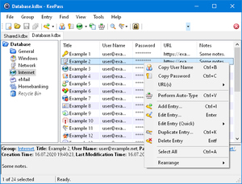

KeePass 2.48 released

DOWNLOAD
- New KDBX 4.1 file format, which supports various new features (listed below).
- Added support for group tags (KDBX 4.1).
- In the entry/group dialogs, there now is a button to show a menu for adding/removing existing tags.
- If an entry/group inherits a tag from a parent group, a link is displayed in the entry/group dialog to show the parent groups and their tags.
- Added option in the entry dialog for disabling/enabling the password quality estimation for the current entry (KDBX 4.1).
- If the password quality estimation is disabled for an entry, the entry is now excluded from password quality reports (menu 'Find' → 'Password Quality').
- When moving an entry/group into a different group (e.g. into the recycle bin), the previous parent group is remembered now (KDBX 4.1, not enforcing).
- Added command 'Move to Previous Parent Group' (in the 'Rearrange' popup menu; if the command will move all selected entries/groups out of the recycle bin, a '(Restore)' suffix is appended to the command name; if at least one entry/group will be moved into/within the recycle bin, a confirmation dialog is displayed).
- Renaming a list view item (if supported, e.g. a file attached to an entry) can now be initiated by pressing the F2 key.
- Each custom icon may now have a name, and its last modification time is remembered (KDBX 4.1).
- In the icon picker dialog, a custom icon can now be renamed (click on an already selected name or press the F2 key).
- In the icon picker dialog, the dimensions and the size of a custom icon are now displayed in a tooltip.
- The UUID and the deletion time of a deleted custom icon are remembered now, and this information is used in order to delete the custom icon during a synchronization (if the last modification time is older than the deletion time).
- Added built-in URL override for associating the 'ssh' URL scheme with 'SSH.exe' (OpenSSH, included in Windows 10; activatable/deactivatable in 'Tools' → 'Options' → tab 'Integration' → button 'URL Overrides').
- Added support for loading images with Exif orientation tags.
- Enhanced the LastPass import module to support CSV files created by the latest versions.
- Enhanced the nPassword import module to import group tags.
- The last modification time of a database-specific custom data item (by a plugin/port) is now saved (KDBX 4.1).
- When synchronizing databases, database-specific custom data items (by plugins/ports) are now merged based on their last modification times.
- Added support for loading KDBX 4 files created by other applications that do not perform a binary content deduplication.
- Added workaround for .NET/Windows TopMost/WS_EX_TOPMOST desynchronization bug.
- Various user interface improvements in the group dialog (moved the notes box to the first tab page, moved the auto-type behavior option to the auto-type tab, ...).
- Tags are sorted naturally now.
- Improved tag handling performance.
- Various user interface improvements in the icon picker dialog.
- The temporary icon that represents multiple icons (when editing multiple entries at once) is now named '(Multiple values)'.
- Improved custom icon handling performance.
- The placeholders {HMACOTP} and {TIMEOTP} now automatically add padding to shared secrets in Base32 encoding, if necessary.
- Improved error handling of the placeholders {HMACOTP} and {TIMEOTP}.
- Internal data viewer/editor: '*.asc', '*.tab' and '*.tsv' files are now treated as text files by default.
- The internal data viewer now does not try to display non-HTML files using the web browser control anymore.
- Improved error handling of the Bitwarden JSON and nPassword NPW import modules.
- Improved merging of custom data items (by plugins/ports) in the KDBX file header.
- Improved image hashing.
- Improved version display in the 'About' dialog.
- Installer: improved file overwriting.
- On 64-bit operating systems, the registry value for the setup option 'Optimize KeePass start-up performance' is now created in the 64-bit view of the registry.
- ShInstUtil now fully supports Unicode.
- Various UI text improvements.
- Various code optimizations..
- Minor other improvements.